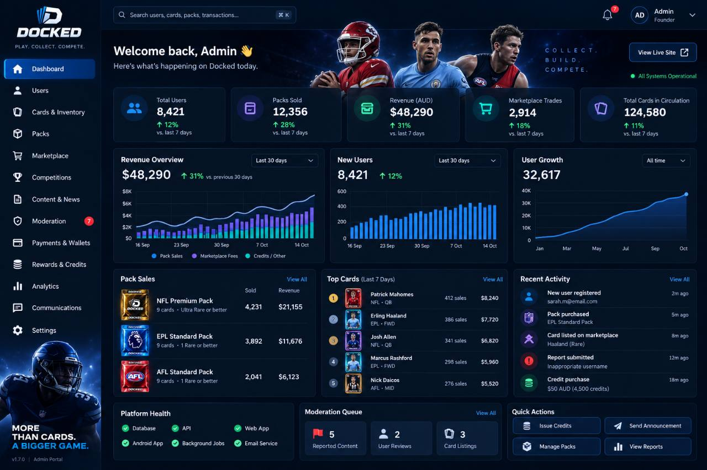
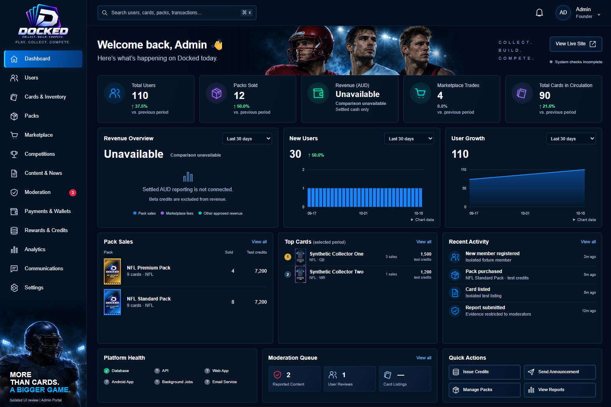

Left: original supplied 1280 × 853 JPEG, copied unchanged. Right: actual 1536 × 1024 browser rendering with synthetic fixture records. Figures intentionally differ. Revenue is unavailable and unprobed health stays unknown. This is visual review, not authenticated or physical-device acceptance.


1440 desktop · Tablet · 412 mobile · 360 narrow mobile · Machine-readable evidence